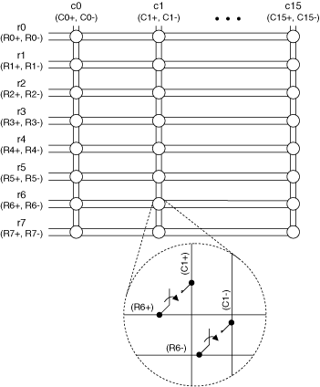
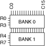
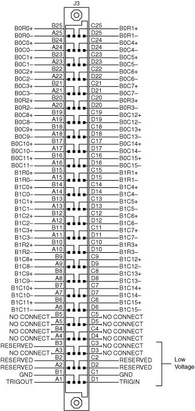

The TB-2635 terminal block creates a 2-wire 8×16 matrix topology with the NI PXI/PXIe-2529 (NI 2529). The following figure represents the NI 2529 in the 2-wire 8×16 matrix topology.
|  |
|
The NI 2529 combined with the NI TB-2635 creates an 8×16 matrix. In this topology you can connect any row to any column. When connecting signals to r1, you would connect them to R1+ and R1– in the terminal block. When connecting signals to c0, you would connect them to C0+ and C0– in the terminal block.
You can connect the channels of the NI 2529 using the niSwitch Connect Channels VI or the niSwitch_Connect function. For example, to connect row 1 to column 1, call the niSwitch Connect Channels VI or the niSwitch_Connect function with the channel 1 parameter set to r1 and the channel 2 parameter set to c1.
When scanning the NI 2529 in 8×16 matrix topology, a typical scan list entry could be r5->c1;. This entry routes the signal connected to row 5 to column 1.

The NI TB-2635 terminal block configures the NI 2529 as a 2-wire 8×16 matrix.
The following table lists the NI 2529 pins that the NI TB-2635 terminal block shorts and the column connections created. If you do not use the NI TB-2635 terminal block, short the pins externally to achieve a 2-wire 8×16 matrix topology. Refer to the NI 2529 pinout for pin locations.
| Connection | Pins | Connection | Pins | Connection | Pins | Connection | Pins |
|---|---|---|---|---|---|---|---|
| C0+ | B24, B14 | C4+ | C24,C14 | C8+ | B19,B9 | C12+ | C19,C9 |
| C0- | A24,A14 | C4- | D24,D14 | C8- | A19,A9 | C12- | D19,D9 |
| C1+ | B23,B13 | C5+ | C23,C13 | C9+ | B18,B8 | C13+ | C18,C8 |
| C1- | A23,A13 | C5- | D23,D13 | C9- | A18,A8 | C13- | D18,D8 |
| C2+ | B22,B12 | C6+ | C22,C12 | C10+ | B17,B7 | C14+ | C17,C7 |
| C2- | A22,A12 | C6- | D22,D12 | C10- | A17,A7 | C14- | D17,D7 |
| C3+ | B21,B11 | C7+ | C21,C11 | C11+ | B16,B6 | C15+ | C16,C6 |
| C3- | A21,A11 | C7- | D21,D11 | C11- | A16,A6 | C15- | D16,D6 |
The following table lists the NI 2529 pins and their associated row connection.
| Connection | Pins | Connection | Pins | Connection | Pins | Connection | Pins |
|---|---|---|---|---|---|---|---|
| R0+ | B25 | R2+ | B20 | R4+ | B15 | R6+ | B10 |
| R0- | A25 | R2- | A20 | R4- | A15 | R6- | A10 |
| R1+ | C25 | R3+ | C20 | R5+ | C15 | R7+ | C10 |
| R1- | D25 | R3- | D20 | R5- | D15 | R7- | D10 |
The following figure identifies the pins for the NI 2529.

 |
Caution Do not connect to RESERVED pins or to NO CONNECT pins. Keep low-voltage pins isolated from row and column channels when high voltage is present. |